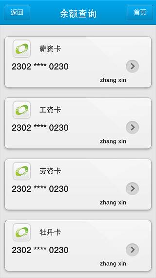
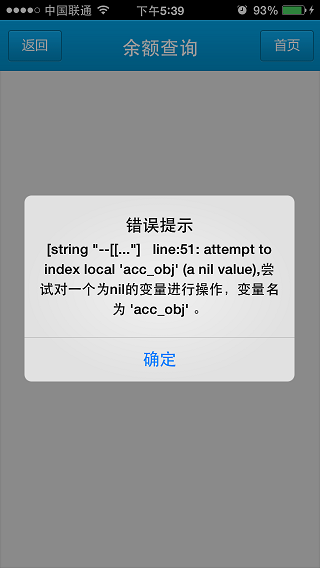
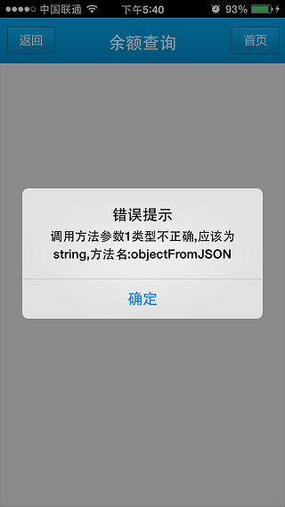
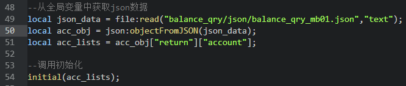
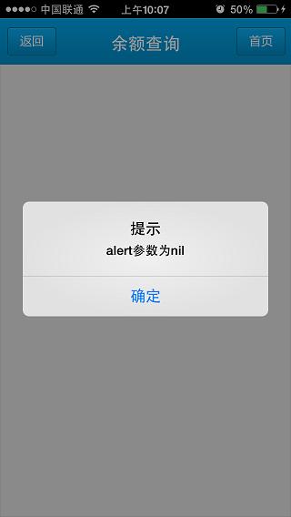
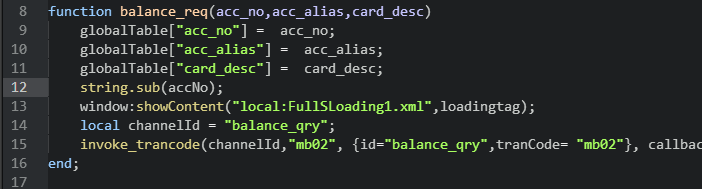
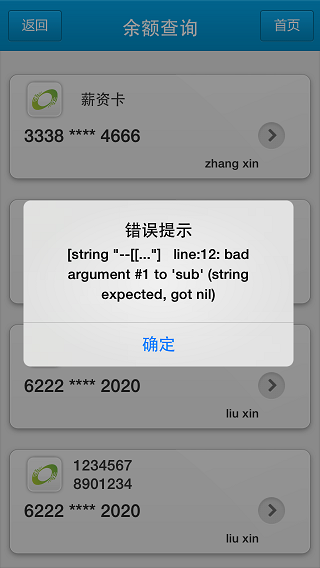
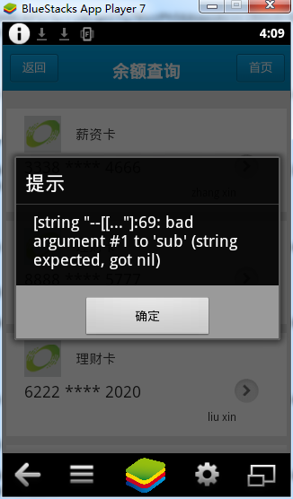

界面部分编码规范
1 概述
目前的XHTML界面中包含以下三大块：
<style>
各种样式
</style>
<script type="text/x-lua">
<![CDATA[
function submit()
...
end;
]]>
</script>
<body>
各种标签
</body>
在界面比较复杂的情况下，将所有脚本和页面元素都写在此一个xhtml文件中，会导致此文件特别庞大，出现错误时不能快速定位错误位置，同时 不利于维护。
由于客户端提供了脚本引入的功能，所以考虑使用引入脚本的方式来编写界面。
2 脚本完全引入
在脚本完全引入的模式下，界面代码类似于：
<?xml version="1.0" encoding="UTF-8" ?>
<content>
<head>
<link ref="ebank_common.css" type="text/css"/>
<link ref="current_notice/css/current_notice_mtz001.css" type="text/css"/>
<script type="text/x-lua" src="current_notice/lua/current_notice_mtz001.lua"></script>
</head>
<body>
页面标签
</body>
</content>
此时整体文件只有body会特别长。
以一个简单例子讲解如何编写。
账户列表界面：

按照规定命名：
channel: balance_qry
tranCode: mb01
xhtml文件名为：mb01.xhtml
lua文件名为： mb01.lua
css文件名为：mb01.css
可以先写出静态页面代码，截取中间账户列表的table的部分代码：
<table class="acc_table" border="0">
<tr>
<td>
<div class="tr_div" border="0">
<img src="local:balance_qry/images/logo.png" class="img_rytong"/>
<label class="label_alias">薪资卡</label><br/>
<label class="label_acc">2303 **** 3309</label>
<img src="local:balance_qry/images/card_pull_but.png" class="img_onclick"/><br/>
<label class="label_py">zhang xin</label>
</div>
</td>
</tr>
...
</table>
账户列表json数据：
{
"return":
{
"error_code":"000000",
"error_msg":"",
"account":
[
{
"acc_no":"3338480010038844666",
"acc_alias":"薪资卡",
"card_desc":"zhang xin"
},
...
{
"acc_no":"6222534758583922020",
"acc_alias":"12345678901234567890",
"card_desc":"liu xin"
}
]
}
}
初始化函数主要为实现拼接账户列表table，根据静态table和账户列表json数据得到此函数为：
--[[
@doc: 根据获得的json数据拼接账户列表
@params:
coll_lists: 账户列表table
]]--
local function acc_list(coll_lists)
local tr_channel = "";
for key, coll_list in pairs(coll_lists) do
tr_channel =
tr_channel ..
[[
<tr>
<td>
<div class="tr_div" border="0">
<img src="local:balance_qry/images/logo.png" class="img_rytong"/>
<label class="label_alias">]]..coll_list["acc_alias"]..[[</label><br/>
<label class="label_acc">]]..string.sub(coll_list["acc_no"],1,4)..[[ **** ]]..string.sub(coll_list["acc_no"],string.len(coll_list["acc_no"])-3,-1)..[[</label>
<img src="local:balance_qry/images/card_pull_but.png" class="img_onclick"/><br/>
<label class="label_py">]]..coll_list["card_desc"]..[[</label>
</div>
</td>
</tr>]];
end;
return tr_channel;
end;
由于界面中账户列表为初始化拼接，所以body内容只包含标题栏内容。
<body>
<!--Title-->
<table class="table_title" border="0">
<tr class="tr_title" >
<td align="center" valign="middle">
<label class="label_title">余额查询</label>
<input type="button" class="button_back" name="back_but" onclick="back_fun_mb01('account_qry')"/>
<input type="button" class="button_main" name="main_but" onclick="main_page_callback()"/>
</td>
</tr>
</table>
<!--账户列表-->
<div class="acc_div" name="div_acc" border="0"></div>
</body>
在balance_qry_mb01.lua中实现初始化：
--[[
@doc:界面初始化
@params:账户列表
--]]
local function initial(acc_lists)
--调用拼接方法生成tr
local tr_lists = acc_list(acc_lists);
local div_acc =
[[
<div class="acc_div" name="div_acc" border="0">
<table class="acc_table" border="0">]].. tr_lists .. [[
</table>
</div>
]];
--局部刷新
local div_acc_ctrl = document:getElementsByName("div_acc");
if div_acc_ctrl and #div_acc_ctrl > 0 then
div_acc_ctrl[1]:setInnerHTML(div_acc);
end;
end;
--从全局变量中获取json数据
local json_data = globalTable["mb01"];
local acc_obj = json:objectFromJSON(json_data);
local acc_lists = acc_obj["return"]["account"];
--调用初始化
initial(acc_lists);
由于我们运行前没有为全局变量globalTable["mb01"]赋值，所以我们将json_data的赋值改为读取文件。
整体报文请参照以下链接：
balance_qry_mb01.json
balance_qry_mb01.xhtml
balance_qry_mb01.lua
balance_qry_mb01.css
我们将初始化方法规定命名为initial,如果在初始化时出错了可以准确找到此方法跟踪。
下面我们看看如何准确定位lua错误信息。
3 开发调试
balance_qry_mb01.xhtml只引用了一个外联lua文件(balance_qry_mb01.lua)。
运行此channel，进入此xhtml界面时弹出两个报错信息框：


分析此错误信息：
根据弹出的两处错误信息进行分析：
- 调用方法
objectFromJSON第一个参数类型不对，应该为string. - 在51行,acc_obj变量为nil值，对nil值进行操作导致出错.
看一下lua文件中的51行以及前后文，代码为：

根据代码上下文，可以知道由于在50行local acc_obj = json:objectFromJSON(json_data);这操作出错导致
51行运行错误。至于50行为什么出错，就是由于参数不对，那么就可以追踪到49行
local json_data = file:read("balance_qry/json/balance_qry_mb01.json","text");,应该是此时给json_data
赋值不对导致下面的代码错误。我们增加打印语句打印json_data试试。
--从全局变量中获取json数据
local json_data = file:read("balance_qry/json/balance_qry_mb01.json","text");
window:alert(json_data);
local acc_obj = json:objectFromJSON(json_data);
local acc_lists = acc_obj["return"]["account"];
运行：

alert参数为nil，那么表示json_data变量为nil值，没有赋值上。
根据参考手册中file:read接口的说明文件类型为"text"则返回字符串（String），
为"image"则返回二进制数据（Userdata类型），文件不存在则返回nil。
此时返回为nil值，说明文件不存在即balance_qry/json/balance_qry_mb01.json此文件不存在。
由于没有上传离线资源，导致读取文件时文件不存在，所以将balance_qry channel打包作为插件上传。
运行结果符合预期：

根据这个例子可以看出如何只引入lua单个脚本时，从报错信息中可以看出错误代码是哪一行，从而具体定位出错误。
将界面上的点击事件单独生成一个lua文件，命名为 balance_qry_mb01_action.lua
完整报文为：
修改xhtml界面为引入两份lua文件。
<head>
<link ref="balance_qry/css/balance_qry_mb01.css" type="text/css"/>
<script type="text/x-lua" src="balance_qry/lua/balance_qry_mb01.lua"></script>
<script type="text/x-lua" src="balance_qry/lua/balance_qry_mb01_action.lua"></script>
</head>
在点击tr时调用balance_qry_mb01_action.lua文件中方法balance_req(acc_no,acc_alias,card_desc)。
在代码中主动写个错误代码：

点击账户列表，弹出错误信息为：

根据错误信息得到是第12行出错，错误信息行数正确。
根据上面举例可以知道客户端lua报错可以根据行号来定位错误信息。
以上为iphone平台验证
下面我们看一下android平台报错定位。
android平台运行为：

在引入两份lua文件时，android平台报错信息为69行。
balance_qry_mb01.lua文件长度为57加上balance_qry_mb01_action.lua中的12刚好得到69。
所以android平台为引入lua文件的行数和。
在报错定位上请注意：
- iphone平台定位为单个lua文件行数。
- android平台定位为所有引入lua文件行数和。